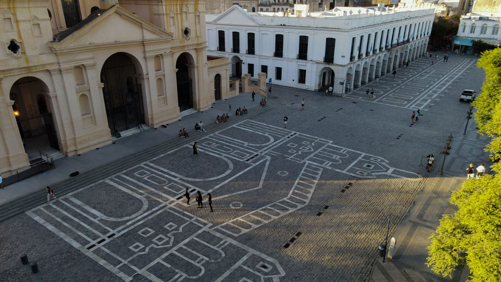
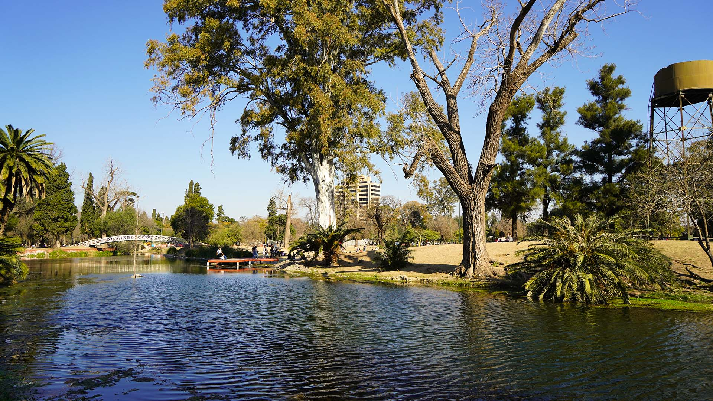
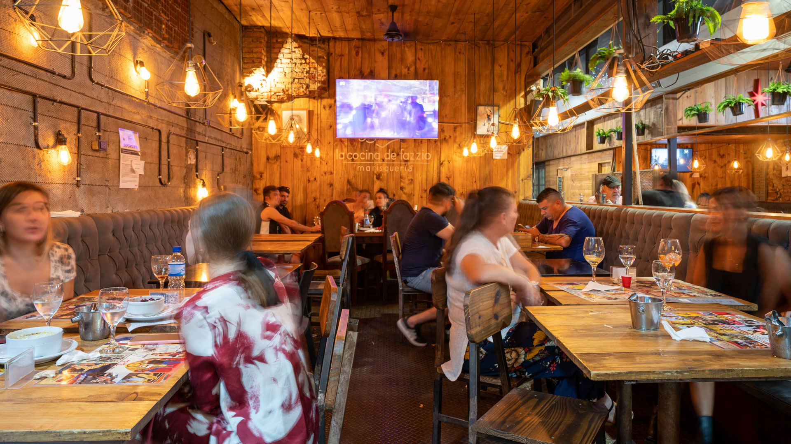
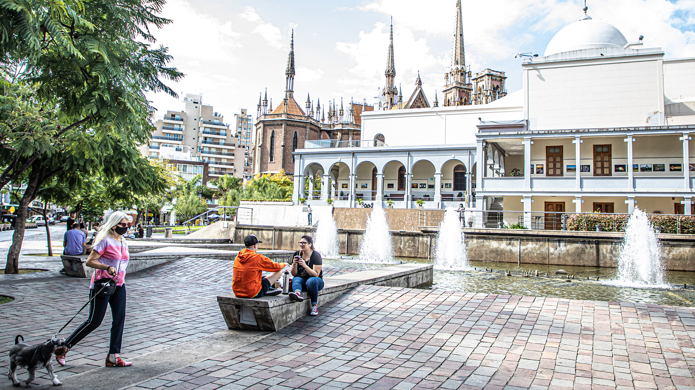
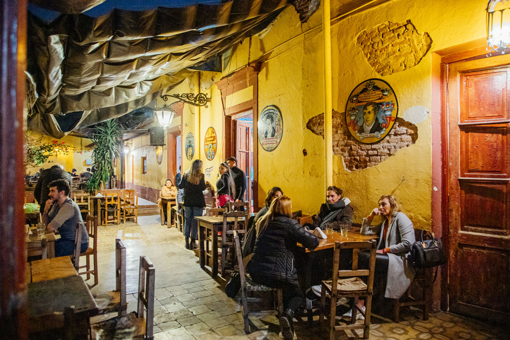

Viví una experiencia única en Córdoba Capital

Descubrí iglesias, edificios coloniales y plazas que cuentan la historia de la ciudad.
Disfrutá del pulmón verde más importante de Córdoba, ideal para caminar, hacer deporte o relajarse.


Probá las clásicas cafeterías, restaurantes y bares que forman parte de la cultura cordobesa.
Uno de los lugares más visitados de la ciudad, con espectáculos, fuentes y espacios culturales.


Bares, peñas y espectáculos musicales hacen de Córdoba una ciudad vibrante durante la noche.